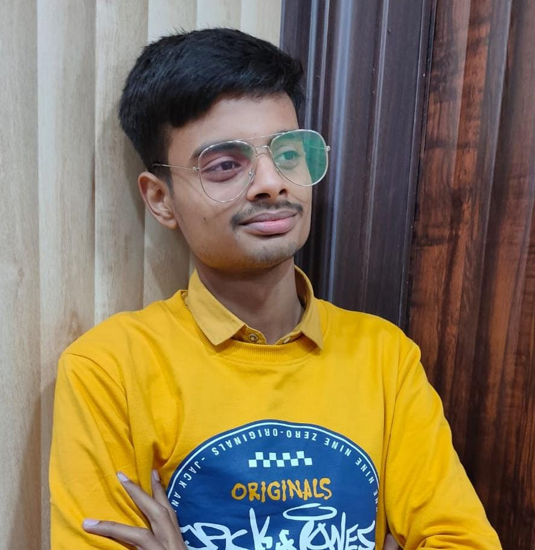

BASIC DETAILS
 Hi, I am Utkarsh Pratap Singh Rajawat,
Computer Science & Engineering Branch,
B.Tech 2nd Year
PORTFOLIO
|| About Me ||
Hello, Myself Utkarsh Rajawat. I am persuing my B.tech from Madan Mohan Malaviya University of Technology in Computer Science and Engineering Branch.
Currently, I am in Second year and I got 8.8 c.g.p.a in 1st year of my college.
My father's name is Mr. Uttam Singh and he is a self-employed person.
My mother's name is Mrs. Anuradha Chauhan and She is a govt. teacher.
I am from Orai which is in Jalaun district. I had completed my initial studies upto Class 8thfrom Thakur Mahendra Singh Public School and from class 9th
to class 12th in Maharishi Vidya Mandir,Orai and secure 90.4% in class 10th in 2018 and 94.2% in class 12thin 2020.
Along with the schooling in Orai, I went to Kota in class 11th and prepare for jee as well as board exams.
I secured 95.2 percentile in JEE mains. I had also given MET which is an entrance exam of MMMUT and secure 505 rank
and through general counselling, I got Electronics and Communication Engineering Branch.
After completing my 1th year, I had been upgraded to CSE branch.